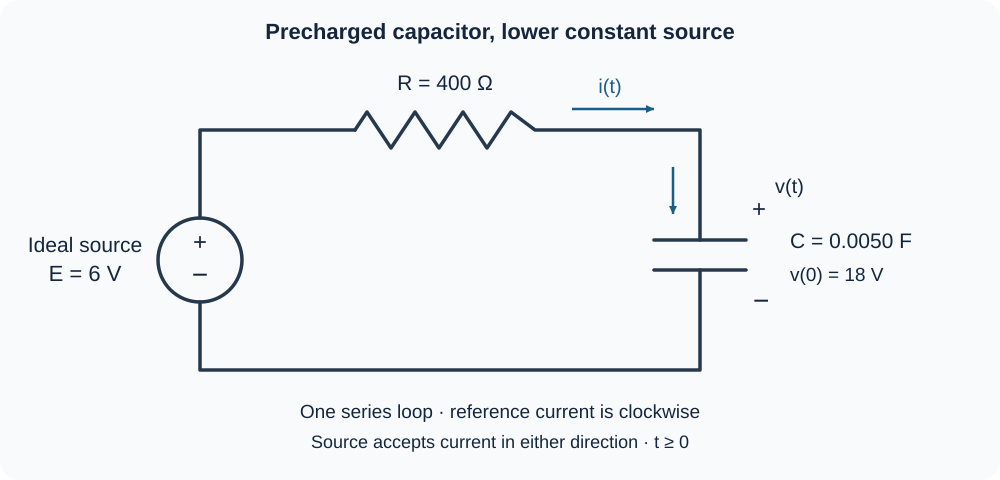

Course practice / Batch 07 / 2026-10-11 PDT
MTH 256
一阶微分方程
First-order differential equations · 初值验证、方向场、分离变量、积分因子，以及冷却、比例增长与移除、逻辑斯蒂增长、纯水冲洗与 RC 放电
A flat initial tangent need not mean a constant solution
Consider \(y^{\prime}+2ty=2t\), with \(y(0)=4\), and the candidate \(u(t)=1+3e^{-t^2}\). Both t and y are dimensionless; consider real t.
- Identify the independent variable, dependent variable, order, and whether the equation is linear in y. Identify its coefficient of y and its forcing term.
- Differentiate u(t) and substitute into the differential equation to verify it for every real t.
- Check the initial value and find the initial slope directly from both the equation and the candidate.
- Is u a constant function just because its initial slope is zero? Use its derivative to describe what it does for t > 0.
中文提示（不含解答）
初始斜率只描述一个时刻；判断函数是否为常数，要检查整个时间区间上的导数。
Every height has the same slope at a fixed time
For \(y^{\prime}=1+t^2\), both t and y are dimensionless. Put t on the horizontal axis and y on the vertical axis.
- Calculate the slopes at all nine points with \(t\in\{-1,0,1\}\) and \(y\in\{-1,0,1\}\), then sketch a short line segment at each point.
- Explain why slopes repeat within each vertical column. Compare the columns at t = −1 and t = 1.
- Are any slope segments horizontal? Can a constant function solve this equation on a nonempty open interval?
- Must every solution be increasing wherever it is defined? Compare its steepness at t = 0 and t = 1. Does sharing a slope at the same time force two solutions to have the same height? No explicit solution is required.
中文提示（不含解答）
把每个点的横坐标代入右端；相同斜率表示局部方向相同，并不表示两个点的位置相同。
A separable response over one cycle
Solve \(y^{\prime}=y\cos t\), \(y(0)=2\), over \(0\le t\le2\pi\). Both variables are dimensionless and angles are in radians.
- Check for a constant solution before dividing by y. Separate variables, solve the IVP, and verify the equation and initial value.
- Determine the time intervals on which this solution increases and decreases.
- Find its maximum and minimum values during the stated cycle, and the times when they occur. Find y(2π) and compare it with the initial value.
- Find the first nonnegative time at which \(y=2\sqrt e\), exactly and to three decimals.
中文提示（不含解答）
分离后使用指数函数恢复 y；判断增减时，分别检查 y 的符号与余弦函数的符号。
A solution that settles alongside a straight line
For \(t\ge0\), solve \(y^{\prime}+\dfrac{2}{t+2}y=3\), with \(y(0)=1\). Both variables are dimensionless.
- Find an integrating factor and show the product-derivative equation.
- Solve the IVP, verify the differential equation and initial condition, and find y(2).
- Find the initial slope. Show whether the solution is increasing throughout the stated interval.
- Find \(y(t)-(t+2)\) and its limit as t tends to infinity. Does y(t) itself have a finite limit? Find the limiting value of its slope.
中文提示（不含解答）
先用积分因子把左边合成一个乘积的导数；比较一条直线与原函数时，要区分差值的极限和函数自身的极限。
A fading input with two decay rates
Solve \(y^{\prime}+3y=6e^{-t}\), \(y(0)=4\), for \(t\ge0\). Both variables are dimensionless.
- Find an integrating factor, show the product-derivative equation, and solve the IVP.
- Verify the differential equation and initial condition. Find the initial rate of change.
- Find y(ln 2) exactly. Use your solution and its derivative to show whether y stays positive and whether it increases or decreases.
- Find the long-term limit. Your expression contains two exponential terms: which one decays faster? Find \(\lim_{t\to\infty}e^t y(t)\) to identify the coefficient of the slower-decaying term.
中文提示（不含解答）
右端的指数函数也要乘上积分因子；解出后可以分别比较两个指数项随时间衰减的速度。
Reconstruct a starting temperature from a later reading
A sample is placed in a room held at 20 °C at time t = 0. Its starting temperature was not recorded. Its temperature at t = 5 minutes is 56 °C. Assume \(T^{\prime}=-0.080(T-20)\), where T is in °C, t is in minutes, and 0.080 has units min\(^{-1}\). Use this constant-environment model for \(t\ge0\).
- Treat the measured condition T(5) = 56 as the specified value for the differential equation. Solve for T(t) and verify that measurement.
- Find the inferred starting temperature and the temperature at t = 10 minutes, both to two decimals.
- Find the first time, measured from t = 0, at which the sample reaches 29 °C. Give an exact expression and a value to two decimals in minutes.
- Find the rates of change at t = 0 and t = 5, to two decimals with units. Does the model predict that the sample reaches exactly 20 °C at a finite time?
中文提示（不含解答）
已知条件不必出现在零时刻；可以让指数中的时间差从测量时刻算起，最后再换回实验开始后的总时间。
Proportional growth and proportional removal compete
A continuously modeled culture initially contains 250 organisms. In the absence of removal, reproduction alone follows \(P^{\prime}=rP\) and would double the population every 6 hours. During the actual experiment, organisms are also removed continuously at the rate 0.040P organisms/hour, where 0.040 has units h\(^{-1}\). Reproduction and removal act simultaneously, and there is no carrying-capacity limit in this idealized model. Use t in hours and the model for \(t\ge0\).
- Find the reproduction coefficient r exactly, with units. Write and solve the IVP for the actual population P(t).
- Calculate the initial reproduction rate, removal rate, and net rate, to two decimals with units. Does the actual population initially increase or decrease?
- Find the actual population after 12 hours and its doubling time, to two decimals. Compare the 12-hour population with what reproduction alone would predict.
- If the removal coefficient were an adjustable constant a instead of 0.040, find the value of a that would keep this population constant. State what happens when a is below or above that value.
中文提示（不含解答）
先由无移除时的翻倍时间求出生长系数，再从每小时的比例增长率中减去比例移除率；不要把比例移除写成固定数量。
The same net growth can occur at two population sizes
A culture follows \(N^{\prime}=0.30N(1-N/600)\), with N(0) = 150 organisms. Time t is in days, the coefficient 0.30 has units day\(^{-1}\), and the carrying capacity is 600 organisms. Treat N as continuous and use the model for \(t\ge0\).
- Find the nonnegative equilibria and classify them using the sign of the growth rate.
- Solve the IVP by separation and check the initial count. Find the first time the culture reaches 450 organisms, exactly and to two decimals.
- Compare the net growth rates at N = 150 and N = 450, in organisms/day. Also compare the per-capita rates \(N^{\prime}/N\), in day\(^{-1}\). Explain why equal net growth rates need not mean equal per-capita rates.
- Find the population at which the net growth rate is largest and the value of that rate. When does this trajectory reach that population? Give the time exactly and to two decimals. State the long-term population limit.
中文提示（不含解答）
总增长率与每个个体对应的增长率是不同的量；把总增长率看成关于 N 的二次函数，有助于比较和寻找最大值。
Does a faster rinse save water?
A tank contains 80 L of liquid with 4.0 kg of dissolved salt. Pure water enters at 4 L/min, and perfectly mixed liquid leaves at the same rate. Assume constant rates, perfect mixing, no evaporation, and no other losses. Let S(t) be salt mass in kg, C(t) concentration in kg/L, and t time in minutes. Continue rinsing until the concentration first reaches 0.010 kg/L.
- Find the volume and write the IVP for S(t). Solve for S(t) and C(t), checking the initial data.
- Find the rinse duration exactly and to two decimals. How many liters of fresh water have entered by that time?
- Find the salt mass remaining and total salt removed at the stopping time. Check the overall salt balance, including the salt input.
- For a separate trial starting from the same initial tank contents, both flow rates are 8 L/min instead. Write the new concentration formula, find the rinse duration and water used, and compare them with the 4 L/min trial. Under these assumptions, does doubling the rate reduce the water needed to reach the target?
中文提示（不含解答）
纯水入口的含盐量为零，但仍会改变盐水的冲洗速度；比较用水量时，要同时考虑流率和所需时间。
A charged capacitor can send current back toward a source
The diagram shows one series loop containing an ideal constant 6 V source, a resistor R = 400 Ω, and a capacitor C = 0.0050 F. At t = 0 the capacitor voltage is v(0) = 18 V, with the upper plate positive. For \(t\ge0\), all components remain connected and the ideal source accepts current in either direction. Current i(t), in amperes, is defined positive clockwise, into the capacitor's upper plate. The labeled source polarity gives \(Ri+v=6\). Use t in seconds and v in volts.
- Write and solve the IVP for v(t). Find the time constant and verify the initial voltage.
- Find i(t), the initial current in mA, and the long-term voltage and current. Explain the actual current direction when i is negative.
- Find the first time v = 9 V, exactly and to three decimals. Find the current at that time, in mA.
- Find the capacitor charge \(Q_C=Cv\) initially, at v = 9 V, and in the long-term limit, in coulombs. Calculate the signed net charge \(\int_0^{t_9}i(t)\,dt\) that enters the upper plate before v reaches 9 V, and check it against the change in capacitor charge.

中文提示（不含解答）
电流的参考方向可以与实际方向相反；先保留电流的正负号，再用电容电荷的变化核对积分结果。